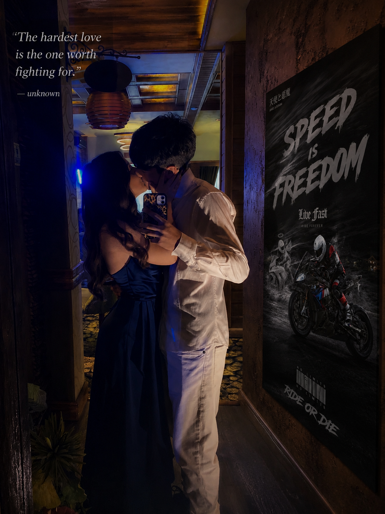

Tu ai apărut în viața mea într-un moment în care poate nici nu știam că îmi lipsește ceva, iar din clipa aceea totul a început să se schimbe. Ai venit fără să anunți, fără promisiuni mari, dar ai reușit să îmi schimbi lumea într-un mod pe care nu l-aș fi crezut posibil. De când te am în viața mea, zilele nu mai sunt doar zile obișnuite, iar lucrurile mici au început să însemne mult mai mult. Un mesaj de la tine îmi poate schimba starea, un zâmbet de-al tău îmi poate face ziua mai frumoasă și simplul fapt că exiști mă face să mă simt diferit.

Tu m-ai învățat ce înseamnă iubirea adevărată, nu iubirea aceea care există doar în cuvinte, ci aceea care se simte în gesturi, în priviri și în momentele în care nu trebuie să spui nimic pentru a fi înțeles. Ai reușit să îmi aduci liniște în suflet și să îmi arăți că uneori o singură persoană poate schimba totul. M-ai făcut să văd viața altfel, să cred mai mult în oameni și să înțeleg că cele mai frumoase lucruri apar atunci când te aștepți mai puțin.
Poate nu îți spun mereu cât de mult însemni pentru mine, dar adevărul este că ai devenit o parte importantă din viața mea. Ai intrat în lumea mea și ai lăsat ceva ce nu poate fi înlocuit: sentimente sincere, amintiri frumoase și o iubire pe care o simt din ce în ce mai puternic. De când ai apărut tu, nimic nu mai pare la fel, pentru că mi-ai schimbat viața într-un mod pe care nu îl pot explica pe deplin în cuvinte, dar îl simt în fiecare zi. Tu nu ai devenit doar o persoană specială pentru mine, ai devenit motivul pentru care multe lucruri au început să aibă mai mult sens.